Log-Normal Regression for Duration Dependent Variables
The log-normal model describes an event’s duration, the dependent variable, as a function of a set of explanatory variables. The log-normal model may take time censored dependent variables, and allows the hazard rate to increase and decrease.
With reference classes:
z5 <- zlognorm$new()
z5$zelig(Surv(Y, C) ~ X, data = mydata)
z5$setx()
z5$sim()
With reference classes:
z5 <- zlognorm$new()
z5$zelig(Surv(Y, C) ~ X, data = mydata)
z5$setx()
z5$sim()
With the Zelig 4 compatibility wrappers:
z.out <- zelig(Surv(Y, C) ~ X, model = "lognorm", data = mydata)
x.out <- setx(z.out)
s.out <- sim(z.out, x = x.out)
Log-normal models require that the dependent variable be in the form
Surv(Y, C), where Y and C are vectors of length  . For each
observation
. For each
observation  in 1, …, , the value
in 1, …, , the value  is the
duration (lifetime, for example) of each subject, and the associated
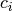 is a binary variable such that 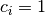 if the
duration is not censored (e.g., the subject dies during the study) or
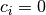 if the duration is censored (e.g., the subject is
still alive at the end of the study). If is omitted, all Y
are assumed to be completed; that is, time defaults to 1 for all
observations.
is the
duration (lifetime, for example) of each subject, and the associated
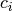 is a binary variable such that 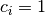 if the
duration is not censored (e.g., the subject dies during the study) or
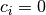 if the duration is censored (e.g., the subject is
still alive at the end of the study). If is omitted, all Y
are assumed to be completed; that is, time defaults to 1 for all
observations.
In addition to the standard inputs, zelig() takes the following additional options for lognormal regression:
z.out <- zelig(y ~ x1 + x2, robust = TRUE, cluster = "x3", model = "exp", data = mydata)
means that the observations can be correlated within the strata defined by the variable x3, and that robust standard errors should be calculated according to those clusters. If robust = TRUE but cluster is not specified, zelig() assumes that each observation falls into its own cluster.
Attach the sample data:
data(coalition)
Estimate the model:
z.out <- zelig(Surv(duration, ciep12) ~ fract + numst2, model ="lognorm", data = coalition)
## How to cite this model in Zelig:
## Matthew Owen, Olivia Lau, Kosuke Imai, Gary King. 2007.
## lognorm: Log-Normal Regression for Duration Dependent Variables
## in Kosuke Imai, Gary King, and Olivia Lau, "Zelig: Everyone's Statistical Software,"
## http://datascience.iq.harvard.edu/zelig
View the regression output:
summary(z.out)
## Model: 1Call:
## survival::survreg(formula = Surv(duration, ciep12) ~ fract +
## numst2, data = ., dist = "lognormal", model = FALSE)
##
## Coefficients:
## (Intercept) fract numst2
## 5.366670 -0.004438 0.559833
##
## Scale= 1.2
##
## Loglik(model)= -1078 Loglik(intercept only)= -1101
## Chisq= 46.58 on 2 degrees of freedom, p= 7.7e-11
## n= 314
## Next step: Use 'setx' method
Set the baseline values (with the ruling coalition in the minority) and the alternative values (with the ruling coalition in the majority) for X:
x.low <- setx(z.out, numst2 = 0)
x.high <- setx(z.out, numst2= 1)
Simulate expected values (qi$ev) and first differences (qi$fd):
s.out <- sim(z.out, x = x.low, x1 = x.high)
summary(s.out)
##
## sim x :
## -----
## ev
## mean sd 50% 2.5% 97.5%
## 1 18.3 2.363 18.1 14.15 23.4
## pv
## mean sd 50% 2.5% 97.5%
## 1 18.3 2.363 18.1 14.15 23.4
##
## sim x1 :
## -----
## ev
## mean sd 50% 2.5% 97.5%
## 1 32.03 3.664 31.76 25.43 39.49
## pv
## mean sd 50% 2.5% 97.5%
## 1 32.03 3.664 31.76 25.43 39.49
## fd
## mean sd 50% 2.5% 97.5%
## 1 13.74 3.705 13.75 7.049 21.09
plot(s.out)
Zelig-lognorm
Let  be the survival time for observation with
the density function 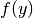 and the corresponding distribution
function 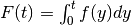. This variable might be
censored for some observations at a fixed time 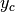 such that the
fully observed dependent variable,
be the survival time for observation with
the density function 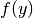 and the corresponding distribution
function 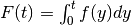. This variable might be
censored for some observations at a fixed time 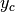 such that the
fully observed dependent variable,  , is defined as
, is defined as
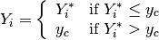
The stochastic component is described by the distribution of the
partially observed variable,  . For the lognormal model,
there are two equivalent representations:
. For the lognormal model,
there are two equivalent representations:
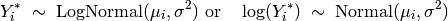
where the parameters  and
and  are the mean
and variance of the Normal distribution. (Note that the output from
zelig() parameterizes scale:math:` = sigma`.)
are the mean
and variance of the Normal distribution. (Note that the output from
zelig() parameterizes scale:math:` = sigma`.)
In addition, survival models like the lognormal have three additional
properties. The hazard function 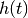 measures the probability
of not surviving past time  given survival up to .
In general, the hazard function is equal to 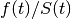 where
the survival function 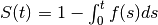 represents the fraction still surviving at
time . The cumulative hazard function 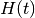 describes
the probability of dying before time . In general,
given survival up to .
In general, the hazard function is equal to 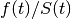 where
the survival function 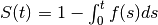 represents the fraction still surviving at
time . The cumulative hazard function 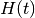 describes
the probability of dying before time . In general,
 . In the case of the lognormal
model,
. In the case of the lognormal
model,
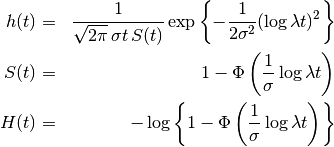
where 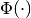 is the cumulative density function for the Normal distribution.
The systematic component is described as:
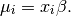
The expected values (qi$ev) for the lognormal model are simulations of the expected duration:
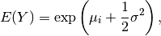
given draws of  and
and  from their sampling
distributions.
from their sampling
distributions.
The predicted value is a draw from the log-normal distribution given simulations of the parameters 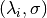.
The first difference (qi$fd) is
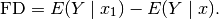
In conditional prediction models, the average expected treatment effect (att.ev) for the treatment group is
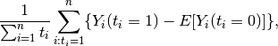
where  is a binary explanatory variable defining the
treatment (
is a binary explanatory variable defining the
treatment ( ) and control (
) and control ( ) groups. When
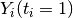 is censored rather than observed, we replace it
with a simulation from the model given available knowledge of the
censoring process. Variation in the simulations is due to two
factors: uncertainty in the imputation process for censored
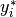 and uncertainty in simulating
) groups. When
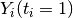 is censored rather than observed, we replace it
with a simulation from the model given available knowledge of the
censoring process. Variation in the simulations is due to two
factors: uncertainty in the imputation process for censored
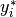 and uncertainty in simulating ![E[Y_i(t_i=0)]](_images/math/f658a3cf4cf830cd65eab505c530fb4796fea0ed.png) ,
the counterfactual expected value of for observations in
the treatment group, under the assumption that everything stays the
same except that the treatment indicator is switched to
.
,
the counterfactual expected value of for observations in
the treatment group, under the assumption that everything stays the
same except that the treatment indicator is switched to
.
In conditional prediction models, the average predicted treatment effect (att.pr) for the treatment group is
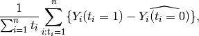
where is a binary explanatory variable defining the
treatment () and control () groups. When
is censored rather than observed, we replace it
with a simulation from the model given available knowledge of the
censoring process. Variation in the simulations are due to two
factors: uncertainty in the imputation process for censored
and uncertainty in simulating
 , the counterfactual predicted value of
for observations in the treatment group, under the
assumption that everything stays the same except that the treatment
indicator is switched to .
, the counterfactual predicted value of
for observations in the treatment group, under the
assumption that everything stays the same except that the treatment
indicator is switched to .
The output of each Zelig command contains useful information which you may view. For example, if you run z.out <- zelig(Surv(Y, C) ~ X, model = lognorm, data), then you may examine the available information in z.out by using names(z.out), see the coefficients by using z.out$coefficients, and a default summary of information through summary(z.out).
The exponential function is part of the survival library by by Terry Therneau, ported to R by Thomas Lumley. Advanced users may wish to refer to help(survfit) in the survival library.